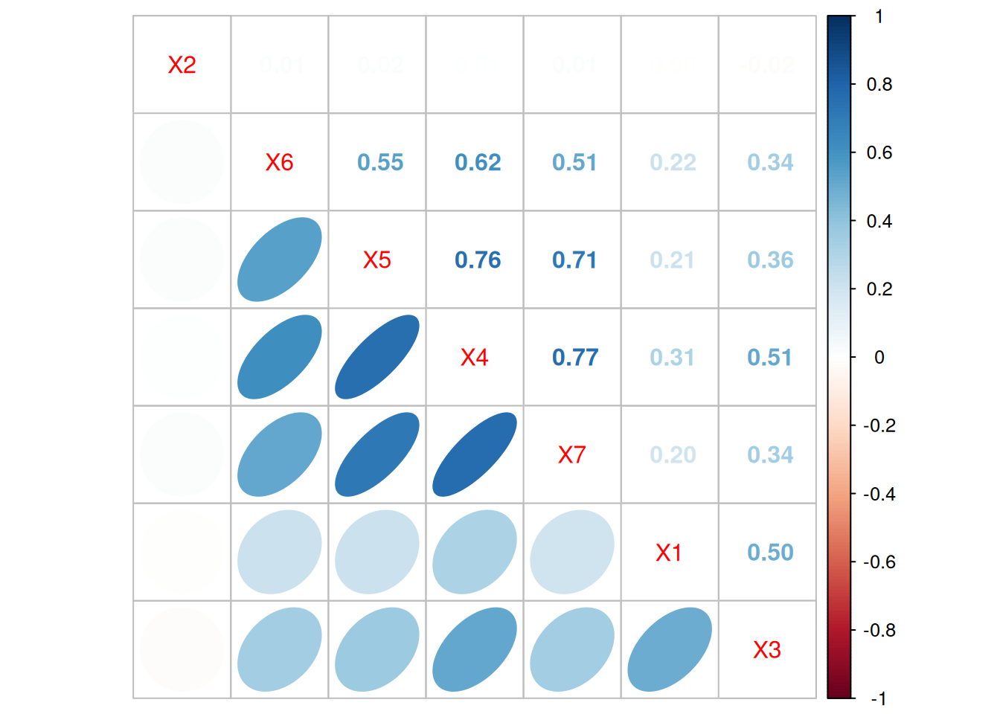

La matriz de varianzas-covarianzas \(\Sigma\) es utilizada en el análisis multivariado de datos para describir la variabilidad conjunta entre dos o más variables. Esta matriz proporciona información sobre la dispersión y las relaciones lineales entre las variables en un conjunto de datos.
\[ \Sigma = \begin{bmatrix} Var[x_{1}] & Cov[x_{1},x_{2}] & Cov[x_{1},x_{3}] & \ldots & Cov[x_{1},x_{m}] \\ Cov[x_{2},x_{1}] & Var[x_{2}] & Cov[x_{2},x_{3}] & \ldots & Cov[x_{2},x_{m}] \\ Cov[x_{3},x_{1}] & Cov[x_{3},x_{2}] & Var[x_{3}] & \ldots & Cov[x_{3},x_{m}] \\ \vdots & \vdots & \vdots & \ddots & \vdots \\ Cov[x_{m},x_{1}] & Cov[x_{m},x_{2}] & Cov[x_{m},x_{3}] & \ldots & Var[x_{m}] \\ \end{bmatrix} \]
Incluye las varianzas de cada variable en la diagonal principal y las covarianzas entre pares de variables en las entradas fuera de la diagonal. La varianza (\(Var[x_{i}]\)) mide cuánto varía una variable individualmente, mientras que la covarianza (\(Cov[x_{i},x_{j}]\)) indica cómo dos variables cambian juntas.
Cuando se trata de análisis estadístico, la matriz \(\Sigma\) es esencial para comprender la estructura de dependencia entre variables. Se utiliza comúnmente en técnicas como el análisis de componentes principales, el análisis factorial y la regresión multivariante y es fundamental para entender la dispersión conjunta y las relaciones entre variables en un conjunto de datos.
La matriz de varianzas-covarianzas cuantifica la variabilidad conjunta entre variables en un conjunto de datos, proporcionando información sobre cómo cambian en relación entre sí.
Es esencial en técnicas como el análisis de componentes principales y el análisis factorial, donde se buscan patrones y estructuras en datos multivariados.
En modelos de regresión multivariante, la matriz de covarianzas se utiliza para estimar los coeficientes y sus errores estándar, lo que ayuda a comprender las relaciones entre variables dependientes e independientes.
La matriz de correlaciones (\(R\)) muestra las relaciones lineales entre todas las combinaciones posibles de variables en un conjunto de datos. A diferencia de la matriz de varianzas-covarianzas, la matriz de correlaciones se centra en las relaciones proporcionando coeficientes de correlación en lugar de covarianzas.
\[ R = \begin{bmatrix} 1 & r_{12} & r_{13} & \ldots & r_{1m} \\ r_{21} & 1 & r_{23} & \ldots & r_{2m} \\ r_{31} & r_{32} & 1 & \ldots & r_{3m} \\ \vdots & \vdots & \vdots & \ddots & \vdots \\ r_{m1} & r_{m2} & \rho_{m3} & \ldots & 1 \\ \end{bmatrix} \]
A partir de la matriz \(\Sigma\) se optiene la matriz de correlaciones
\[ R = D^{-1/2}\hspace{.2cm} \Sigma \hspace{.2cm}D^{-1/2} \] donde :
\(R\) : matriz de correlaciones
\(\Sigma\) : matriz de varianzas -
covarianzas \(D\) : matriz diagonal con
las varianzas en la diagonal principal para \(x_1\), \(x_2\), \(x_3\),
Cada elemento de la matriz \(R\), \(r_{ij}\), \(\ldots\), \(x_m\)
\[ r_{ij} = \frac{Cov[x_i,x_j]}{\sqrt{Var[x_i] Var[x_j]}} \]
Este indicador estadístico cuantifica la fuerza y la dirección de la relación lineal (en forma de línea recta) entre dos variables. El rango típico para el coeficiente de correlación va de \(-1\) a \(1\), donde:
\(1\) indica una correlación perfecta positiva - cuando una variable aumenta, la otra tambien aumenta.
\(-1\) indica una correlación perfecta negativa cuando una variable aumenta, la otra disminuye.
\(0\) indica ausencia de correlación lineal - no se presenta una relación en forma de línea recta.
Los elementos fuera de la diagonal principal son los coeficientes de correlación, mientras que en la diagonal principal de la matriz toma valores de \(1\).
Esta matriz es útil para identificar patrones y relaciones entre variables, especialmente en contextos como el análisis exploratorio de datos y la selección de variables en modelos estadísticos.
La matriz de correlaciones revela patrones de asociación lineal entre variables. Esto es útil para entender cómo las variables se mueven juntas y si existe alguna relación significativa entre ellas.
En problemas de selección de variables, la matriz de correlaciones puede ayudar a identificar variables altamente correlacionadas, lo que puede influir en la elección de variables predictoras en modelos.
La colinealidad entre variables predictoras puede afectar la estabilidad de los modelos de regresión. La matriz de correlaciones es útil para diagnosticar la presencia de colinealidad.
Antes de aplicar ciertos algoritmos de aprendizaje automático, como la regresión lineal, es frecuente analizar la matriz de correlaciones para comprender las relaciones entre las variables y realizar ajustes si es necesario.
Para las variables de la data rotacion contenida en paqueteMODELOS fueron seleccionadas las siguientes variables:
La matriz de varianzas-covarianzas
library(paqueteMODELOS)
data("rotacion")
data = rotacion[, c(2,5,13,21,22,23,24)]
names(data) = c("X1","X2","X3","X4", "X5", "X6","X7")
# matriz de varianzas-covarianzas
Mcov <-cov(data)
round(Mcov,3) X1 X2 X3 X4 X5 X6 X7
X1 83.465 -0.115 21409.162 17.421 7.045 6.373 6.586
X2 -0.115 65.721 -649.386 0.472 0.554 0.262 0.417
X3 21409.162 -649.386 22164857.072 14833.731 6205.846 5233.677 5780.054
X4 17.421 0.472 14833.731 37.534 16.842 12.209 16.815
X5 7.045 0.554 6205.846 16.842 13.127 6.399 9.235
X6 6.373 0.262 5233.677 12.209 6.399 10.384 5.867
X7 6.586 0.417 5780.054 16.815 9.235 5.867 12.732corrplot::corrplot.mixed(cor(data), lower="ellipse", upper="number", order="hclust")
La matriz de correlaciones correspondientes
library(paqueteMODELOS)
data("rotacion")
data = rotacion[, c(2,5,13,21,22,23,24)]
names(data) = c("X1","X2","X3","X4", "X5", "X6","X7")
# matriz de varianzas-covarianzas
Mcor <-cor(data)
round(Mcor,3) X1 X2 X3 X4 X5 X6 X7
X1 1.000 -0.002 0.498 0.311 0.213 0.216 0.202
X2 -0.002 1.000 -0.017 0.010 0.019 0.010 0.014
X3 0.498 -0.017 1.000 0.514 0.364 0.345 0.344
X4 0.311 0.010 0.514 1.000 0.759 0.618 0.769
X5 0.213 0.019 0.364 0.759 1.000 0.548 0.714
X6 0.216 0.010 0.345 0.618 0.548 1.000 0.510
X7 0.202 0.014 0.344 0.769 0.714 0.510 1.000